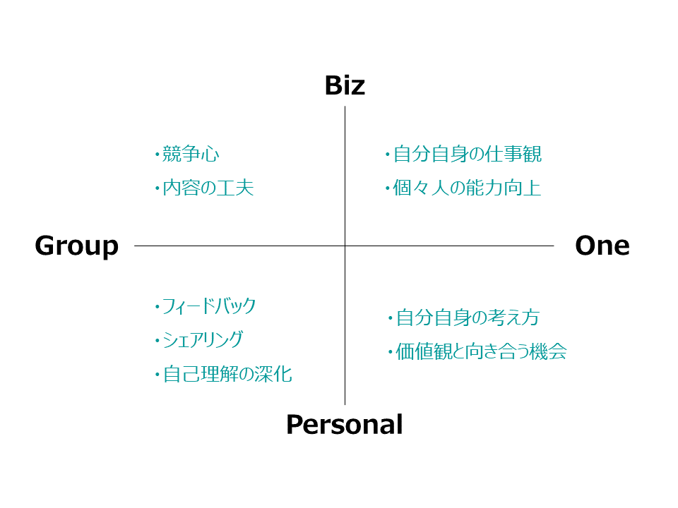
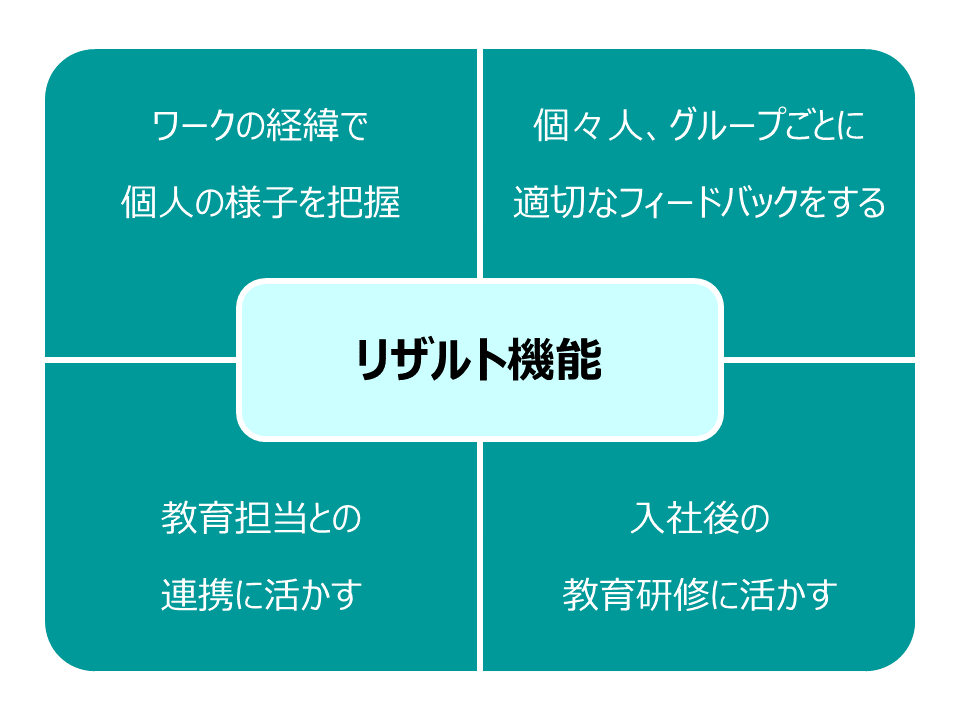
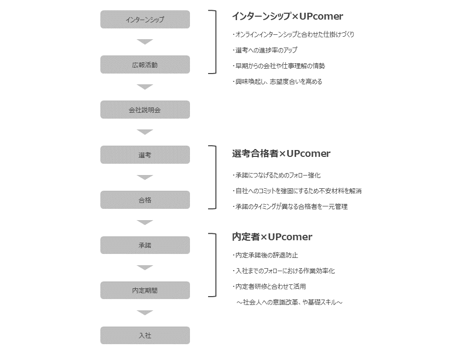
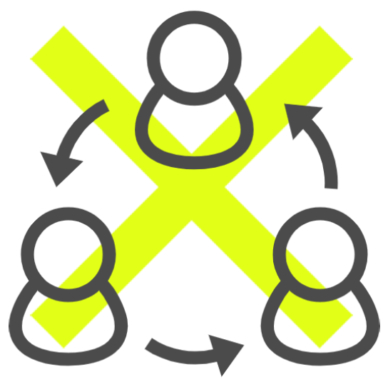
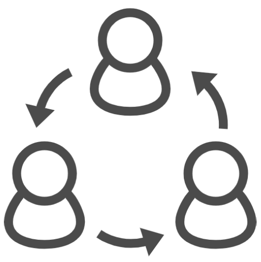
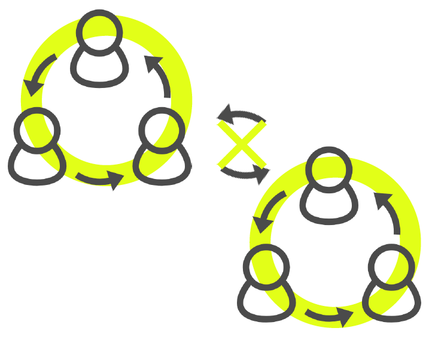

WORKS Philosophy
UPcomer WORKSの目指すもの
使い手が主体的にサイトでコミュニケーションを楽しむ。UPcomerWORKSはそんな自発性を生み出し、質の高いコミュニケーションを通じて成長を加速させる人材フォローサイトです。
能動的なコミュニケーションを創り出し、
コミュニケーションによって成長する環境をつくる
“楽しむ”をベースにおいた
コミュニケーション環境をつくる
自ら考え、自ら行動することで
学びや成長を加速させる
人と人とのつながりから成長の
相乗効果をうむ環境をつくる
グループワークによってのリレーションを深める機会をつくる
Features
UPcomer WORKSの特徴
コミュニケーションをつくるグループワーク機能
オンラインでグループワークで様々な交流のかたちをつくる
課題出題
ディスカッション
回答・まとめ
フィードバック
情報の共有
それぞれの考察
意見のシェア
気付きと共感
統一に向けた話し合い
1つにまとめる行動
(発表)
グループまとめ
個人の意見
フィードバックによる理解の深化
経済産業省が提唱する社会人基礎力3つの能力12の能力要素を軸とした
ワークテーマが6つ標準装備
課題系
＜テーマ1＞
働く会社の20年後を考える
＜テーマ2＞
働く会社を分析する
基礎力
深化系
＜テーマ3＞
社会人基礎力12の能力要素から一番大切な能力を考える
＜テーマ4＞
13番目に入る社会人基礎力を考える
交流
促進系
＜テーマ5＞
グループメンバーを他己紹介で紹介する
＜テーマ6＞
自社の採用で使うノベルティグッズを考える
目的から逆算して実施内容を考える
コミュニケーションを見える化するリザルト機能
内定者はもちろん、新入社員、インターンシップ参加者など、状況が異なるユーザー ごとにUPcomer WORKSのサイトを立ち上げ、それぞれで管理できます。
グループワークの“今”と“後”を把握する
今
進捗確認としてチーム毎の取り組み状況や比較ができる
今
チームだけでなく、個人の状況もランキングとして確認できる
後
グループワークの経過を全てダウンロードすることができる

オリジナルワークシートでワークの成果を見える化
そのワークシートでグループワークを体系立てて実施し、成果をかたちにすることができます。
グループワークを“実施する”だけで終わらせない
どんな採用シーンでも一元管理するエリア機能
内定者はもちろん、新入社員、インターンシップ参加者など、状況が異なるユーザーごとにUPcomer WORKSのサイトを立ち上げ、それぞれで管理できます。
様々な採用フェーズのユーザーを一括フォロー
“エリア機能”により一元管理が可能
①合格者エリア(学生同士の交流は不可)
②内定者エリア(学生同士交流ができる)
③インターンシップエリア(交流可否の設定可能)
